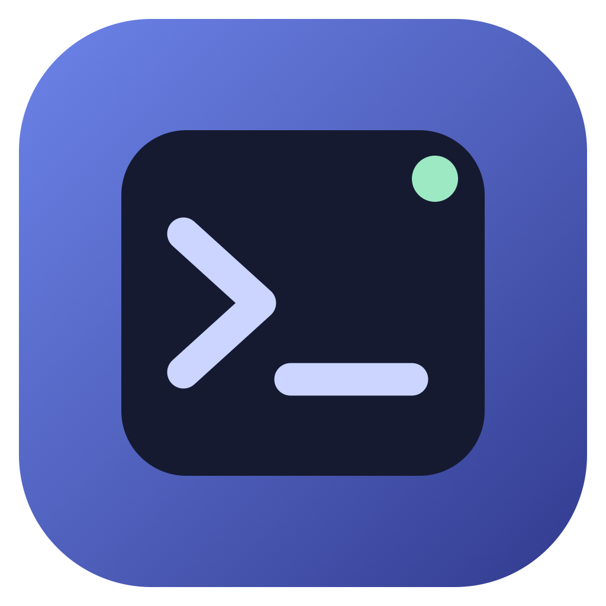

FlowProbe
DESKTOP
任务终端 · 实时浏览器
⚙ 设置
浏览器侧栏 ◧
◎
浏览器
本地会话
←
→
↻
↗
打开
↗
一个可亲自操作的浏览器
提交任务时，这里会展开真实页面。
你也可以先打开网站登录，再把任务交给我。
打开演示页面 ↗
独立的本地浏览器会话 · 登录状态可复用
⌘
整个电脑
任务会通过原生鼠标和键盘操作应用。
请先授予辅助功能和屏幕录制权限。
PREFERENCES
设置
✕
设置保存在本机，任务开始时生效。
模型名称
API 基地址
主题
普通模式
暗夜模式
API Key 从本机环境变量 OPENAI_API_KEY 读取。
最大执行轮数
向模型提供浏览器截图
取消
保存设置